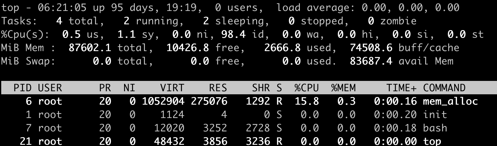
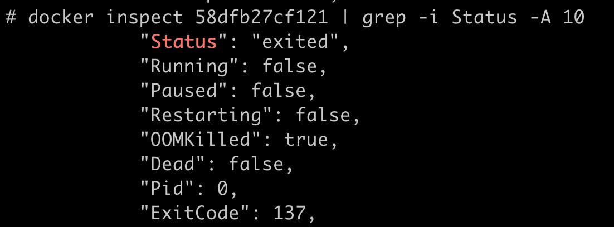
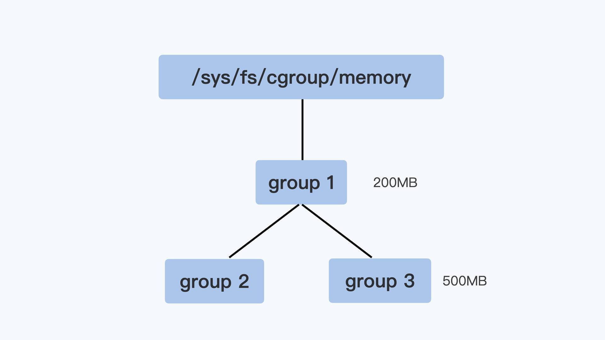
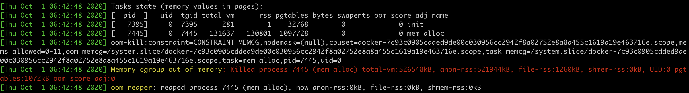
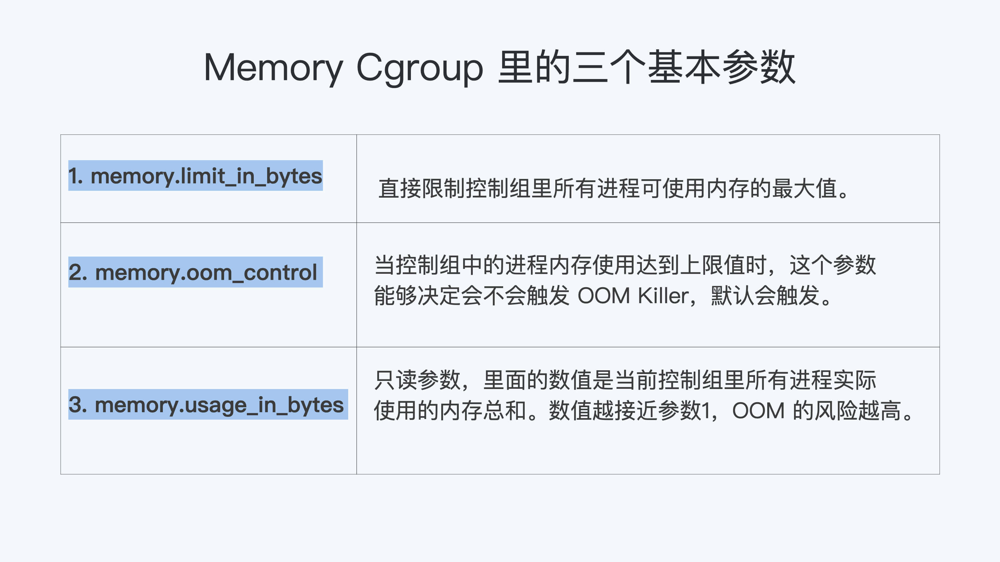

- 00 开篇词 一个态度两个步骤，成为容器实战高手.md.html
- 01 认识容器：容器的基本操作和实现原理.md.html
- 02 理解进程（1）：为什么我在容器中不能kill 1号进程？.md.html
- 03 理解进程（2）：为什么我的容器里有这么多僵尸进程？.md.html
- 04 理解进程（3）：为什么我在容器中的进程被强制杀死了？.md.html
- 05 容器CPU（1）：怎么限制容器的CPU使用？.md.html
- 06 容器CPU（2）：如何正确地拿到容器CPU的开销？.md.html
- 07 Load Average：加了CPU Cgroup限制，为什么我的容器还是很慢？.md.html
- 08 容器内存：我的容器为什么被杀了？.md.html
- 09 Page Cache：为什么我的容器内存使用量总是在临界点.md.html
- 10 Swap：容器可以使用Swap空间吗？.md.html
- 11 容器文件系统：我在容器中读写文件怎么变慢了？.md.html
- 12 容器文件Quota：容器为什么把宿主机的磁盘写满了？.md.html
- 13 容器磁盘限速：我的容器里磁盘读写为什么不稳定_.md.html
- 14 容器中的内存与IO：容器写文件的延时为什么波动很大？.md.html
- 15 容器网络：我修改了_proc_sys_net下的参数，为什么在容器中不起效？.md.html
- 16 容器网络配置（1）：容器网络不通了要怎么调试.md.html
- 17 容器网络配置（2）：容器网络延时要比宿主机上的高吗.md.html
- 18 容器网络配置（3）：容器中的网络乱序包怎么这么高？.md.html
- 19 容器安全（1）：我的容器真的需要privileged权限吗.md.html
- 20 容器安全（2）：在容器中，我不以root用户来运行程序可以吗？.md.html
- 加餐01 案例分析：怎么解决海量IPVS规则带来的网络延时抖动问题？.md.html
- 加餐02 理解perf：怎么用perf聚焦热点函数？.md.html
- 加餐03 理解ftrace（1）：怎么应用ftrace查看长延时内核函数？.md.html
- 加餐04 理解ftrace（2）：怎么理解ftrace背后的技术tracepoint和kprobe？.md.html
- 加餐05 eBPF：怎么更加深入地查看内核中的函数？.md.html
- 加餐06 BCC：入门eBPF的前端工具.md.html
- 结束语 跳出舒适区，突破思考的惰性.md.html
- 捐赠
08 容器内存：我的容器为什么被杀了？
你好，我是程远。
从这一讲内容开始，我们进入容器内存这个模块。在使用容器的时候，一定会伴随着Memory Cgroup。而Memory Cgroup给Linux原本就复杂的内存管理带来了新的变化，下面我们就一起来学习这一块内容。
今天这一讲，我们来解决容器在系统中消失的问题。
不知道你在使用容器时，有没有过这样的经历？一个容器在系统中运行一段时间后，突然消失了，看看自己程序的log文件，也没发现什么错误，不像是自己程序Crash，但是容器就是消失了。
那么这是怎么回事呢？接下来我们就一起来“破案”。
问题再现
容器在系统中被杀掉，其实只有一种情况，那就是容器中的进程使用了太多的内存。具体来说，就是容器里所有进程使用的内存量，超过了容器所在Memory Cgroup里的内存限制。这时Linux系统就会主动杀死容器中的一个进程，往往这会导致整个容器的退出。
我们可以做个简单的容器，模拟一下这种容器被杀死的场景。做容器的Dockerfile和代码，你可以从这里获得。
接下来，我们用下面的这个脚本来启动容器，我们先把这个容器的Cgroup内存上限设置为512MB（536870912 bytes）。
#!/bin/bash
docker stop mem_alloc;docker rm mem_alloc
docker run -d --name mem_alloc registry/mem_alloc:v1
sleep 2
CONTAINER_ID=$(sudo docker ps --format "{{.ID}}\t{{.Names}}" | grep -i mem_alloc | awk '{print $1}')
echo $CONTAINER_ID
CGROUP_CONTAINER_PATH=$(find /sys/fs/cgroup/memory/ -name "*$CONTAINER_ID*")
echo $CGROUP_CONTAINER_PATH
echo 536870912 > $CGROUP_CONTAINER_PATH/memory.limit_in_bytes
cat $CGROUP_CONTAINER_PATH/memory.limit_in_bytes
好了，容器启动后，里面有一个小程序mem_alloc会不断地申请内存。当它申请的内存超过512MB的时候，你就会发现，我们启动的这个容器消失了。

这时候，如果我们运行docker inspect 命令查看容器退出的原因，就会看到容器处于”exited”状态，并且”OOMKilled”是true。

那么问题来了，什么是OOM Killed呢？它和之前我们对容器Memory Cgroup做的设置有什么关系，又是怎么引起容器退出的？想搞清楚这些问题，我们就需要先理清楚基本概念。
如何理解OOM Killer？
我们先来看一看OOM Killer是什么意思。
OOM是Out of Memory的缩写，顾名思义就是内存不足的意思，而Killer在这里指需要杀死某个进程。那么OOM Killer就是在Linux系统里如果内存不足时，就需要杀死一个正在运行的进程来释放一些内存。
那么讲到这里，你可能会有个问题了，Linux里的程序都是调用malloc()来申请内存，如果内存不足，直接malloc()返回失败就可以，为什么还要去杀死正在运行的进程呢？
其实，这个和Linux进程的内存申请策略有关，Linux允许进程在申请内存的时候是overcommit的，这是什么意思呢？就是说允许进程申请超过实际物理内存上限的内存。
为了让你更好地理解，我给你举个例子说明。比如说，节点上的空闲物理内存只有512MB了，但是如果一个进程调用malloc()申请了600MB，那么malloc()的这次申请还是被允许的。
这是因为malloc()申请的是内存的虚拟地址，系统只是给了程序一个地址范围，由于没有写入数据，所以程序并没有得到真正的物理内存。物理内存只有程序真的往这个地址写入数据的时候，才会分配给程序。
可以看得出来，这种overcommit的内存申请模式可以带来一个好处，它可以有效提高系统的内存利用率。不过这也带来了一个问题，也许你已经猜到了，就是物理内存真的不够了，又该怎么办呢？
为了方便你理解，我给你打个比方，这个有点像航空公司在卖飞机票。售卖飞机票的时候往往是超售的。比如说实际上有100个位子，航空公司会卖105张机票，在登机的时候如果实际登机的乘客超过了100个，那么就需要按照一定规则，不允许多出的几位乘客登机了。
同样的道理，遇到内存不够的这种情况，Linux采取的措施就是杀死某个正在运行的进程。
那么你一定会问了，在发生OOM的时候，Linux到底是根据什么标准来选择被杀的进程呢？这就要提到一个在Linux内核里有一个 oom_badness()函数，就是它定义了选择进程的标准。其实这里的判断标准也很简单，函数中涉及两个条件：
第一，进程已经使用的物理内存页面数。
第二，每个进程的OOM校准值oom_score_adj。在/proc文件系统中，每个进程都有一个 /proc/
adj = (long)p->signal->oom_score_adj;
points = get_mm_rss(p->mm) + get_mm_counter(p->mm, MM_SWAPENTS) +mm_pgtables_bytes(p->mm) / PAGE_SIZE;
adj *= totalpages / 1000;
points += adj;
结合前面说的两个条件，函数oom_badness()里的最终计算方法是这样的：
用系统总的可用页面数，去乘以OOM校准值oom_score_adj，再加上进程已经使用的物理页面数，计算出来的值越大，那么这个进程被OOM Kill的几率也就越大。
如何理解Memory Cgroup？
前面我们介绍了OOM Killer，容器发生OOM Kill大多是因为Memory Cgroup的限制所导致的，所以在我们还需要理解Memory Cgroup的运行机制。
在这个专栏的[第一讲]中，我们讲过Cgroups是容器的两大支柱技术之一，在CPU的章节中，我们也讲到了CPU Cgroups。那么按照同样的思路，我们想理解容器Memory，自然要讨论一下Memory Cgroup了。
Memory Cgroup也是Linux Cgroups子系统之一，它的作用是对一组进程的Memory使用做限制。Memory Cgroup的虚拟文件系统的挂载点一般在”/sys/fs/cgroup/memory”这个目录下，这个和CPU Cgroup类似。我们可以在Memory Cgroup的挂载点目录下，创建一个子目录作为控制组。
每一个控制组下面有不少参数，在这一讲里，这里我们只讲跟OOM最相关的3个参数：memory.limit_in_bytes，memory.oom_control和memory.usage_in_bytes。其他参数如果你有兴趣了解，可以参考内核的文档说明。
首先我们来看第一个参数，叫作memory.limit_in_bytes。请你注意，这个memory.limit_in_bytes是每个控制组里最重要的一个参数了。这是因为一个控制组里所有进程可使用内存的最大值，就是由这个参数的值来直接限制的。
那么一旦达到了最大值，在这个控制组里的进程会发生什么呢？
这就涉及到我要给你讲的第二个参数memory.oom_control了。这个memory.oom_control又是干啥的呢？当控制组中的进程内存使用达到上限值时，这个参数能够决定会不会触发OOM Killer。
如果没有人为设置的话，memory.oom_control的缺省值就会触发OOM Killer。这是一个控制组内的OOM Killer，和整个系统的OOM Killer的功能差不多，差别只是被杀进程的选择范围：控制组内的OOM Killer当然只能杀死控制组内的进程，而不能选节点上的其他进程。
如果我们要改变缺省值，也就是不希望触发OOM Killer，只要执行 echo 1 > memory.oom_control 就行了，这时候即使控制组里所有进程使用的内存达到memory.limit_in_bytes设置的上限值，控制组也不会杀掉里面的进程。
但是，我想提醒你，这样操作以后，就会影响到控制组中正在申请物理内存页面的进程。这些进程会处于一个停止状态，不能往下运行了。
最后，我们再来学习一下第三个参数，也就是memory.usage_in_bytes。这个参数是只读的，它里面的数值是当前控制组里所有进程实际使用的内存总和。
我们可以查看这个值，然后把它和memory.limit_in_bytes里的值做比较，根据接近程度来可以做个预判。这两个值越接近，OOM的风险越高。通过这个方法，我们就可以得知，当前控制组内使用总的内存量有没有OOM的风险了。
控制组之间也同样是树状的层级结构，在这个结构中，父节点的控制组里的memory.limit_in_bytes值，就可以限制它的子节点中所有进程的内存使用。
我用一个具体例子来说明，比如像下面图里展示的那样，group1里的memory.limit_in_bytes设置的值是200MB，它的子控制组group3里memory.limit_in_bytes值是500MB。那么，我们在group3里所有进程使用的内存总值就不能超过200MB，而不是500MB。
 好了，我们这里介绍了Memory Cgroup最基本的概念，简单总结一下：
第一，Memory Cgroup中每一个控制组可以为一组进程限制内存使用量，一旦所有进程使用内存的总量达到限制值，缺省情况下，就会触发OOM Killer。这样一来，控制组里的“某个进程”就会被杀死。
第二，这里杀死“某个进程”的选择标准是，控制组中总的可用页面乘以进程的oom_score_adj，加上进程已经使用的物理内存页面，所得值最大的进程，就会被系统选中杀死。
解决问题
我们解释了Memory Cgroup和OOM Killer后，你应该明白了为什么容器在运行过程中会突然消失了。
对于每个容器创建后，系统都会为它建立一个Memory Cgroup的控制组，容器的所有进程都在这个控制组里。
一般的容器云平台，比如Kubernetes都会为容器设置一个内存使用的上限。这个内存的上限值会被写入Cgroup里，具体来说就是容器对应的Memory Cgroup控制组里memory.limit_in_bytes这个参数中。
所以，一旦容器中进程使用的内存达到了上限值，OOM Killer会杀死进程使容器退出。
那么我们怎样才能快速确定容器发生了OOM呢？这个可以通过查看内核日志及时地发现。
还是拿我们这一讲最开始发生OOM的容器作为例子。我们通过查看内核的日志，使用用 journalctl -k 命令，或者直接查看日志文件/var/log/message，我们会发现当容器发生OOM Kill的时候，内核会输出下面的这段信息，大致包含下面这三部分的信息：
第一个部分就是容器里每一个进程使用的内存页面数量。在”rss”列里，”rss’是Resident Set Size的缩写，指的就是进程真正在使用的物理内存页面数量。
比如下面的日志里，我们看到init进程的”rss”是1个页面，mem_alloc进程的”rss”是130801个页面，内存页面的大小一般是4KB，我们可以做个估算，130801 * 4KB大致等于512MB。

第二部分我们来看上面图片的 “oom-kill:” 这行，这一行里列出了发生OOM的Memroy Cgroup的控制组，我们可以从控制组的信息中知道OOM是在哪个容器发生的。
第三部分是图中 “Killed process 7445 (mem_alloc)” 这行，它显示了最终被OOM Killer杀死的进程。
我们通过了解内核日志里的这些信息，可以很快地判断出容器是因为OOM而退出的，并且还可以知道是哪个进程消耗了最多的Memory。
那么知道了哪个进程消耗了最大内存之后，我们就可以有针对性地对这个进程进行分析了，一般有这两种情况：
第一种情况是这个进程本身的确需要很大的内存，这说明我们给memory.limit_in_bytes里的内存上限值设置小了，那么就需要增大内存的上限值。
第二种情况是进程的代码中有Bug，会导致内存泄漏，进程内存使用到达了Memory Cgroup中的上限。如果是这种情况，就需要我们具体去解决代码里的问题了。
重点总结
这一讲我们从容器在系统中被杀的问题，学习了OOM Killer和Memory Cgroup这两个概念。
OOM Killer这个行为在Linux中很早就存在了，它其实是一种内存过载后的保护机制，通过牺牲个别的进程，来保证整个节点的内存不会被全部消耗掉。
在Cgroup的概念出现后，Memory Cgroup中每一个控制组可以对一组进程限制内存使用量，一旦所有进程使用内存的总量达到限制值，在缺省情况下，就会触发OOM Killer，控制组里的“某个进程”就会被杀死。
请注意，这里Linux系统肯定不能随心所欲地杀掉进程，那具体要用什么选择标准呢？
杀掉“某个进程”的选择标准，涉及到内核函数oom_badness()。具体的计算方法是 ：系统总的可用页面数乘以进程的OOM校准值oom_score_adj，再加上进程已经使用的物理页面数，计算出来的值越大，那么这个进程被OOM Kill的几率也就越大。
接下来，我给你讲解了Memory Cgroup里最基本的三个参数，分别是memory.limit_in_bytes， memory.oom_control 和 memory.usage_in_bytes。我把这三个参数的作用，给你总结成了一张图。第一个和第三个参数，下一讲中我们还会用到，这里你可以先有个印象。

容器因为OOM被杀，要如何处理呢？我们可以通过内核日志做排查，查看容器里内存使用最多的进程，然后对它进行分析。根据我的经验，解决思路要么是提高容器的最大内存限制，要么需要我们具体去解决进程代码的BUG。
思考题
在我们的例子脚本基础上，你可以修改一下，在容器刚一启动，就在容器对应的Memory Cgroup中禁止OOM，看看接下来会发生什么？
欢迎留言和我分享你的想法和疑问。如果读完这篇文章有所收获，也欢迎分享给你的朋友。
© 2019 - 2023 Liangliang Lee. Powered by gin and hexo-theme-book.